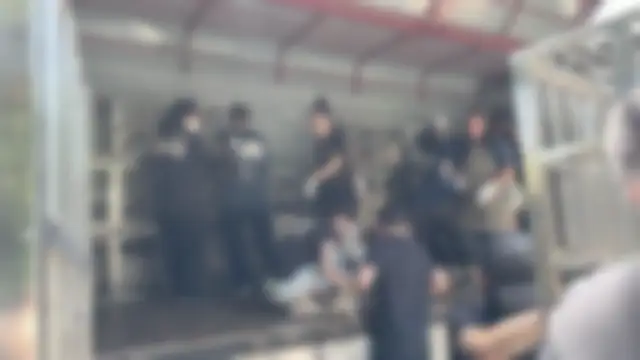
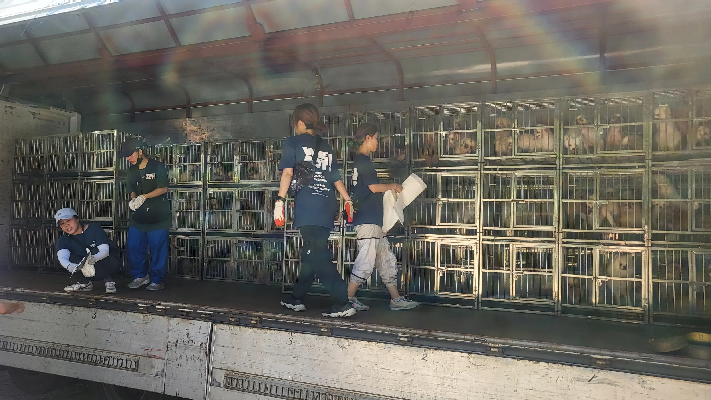
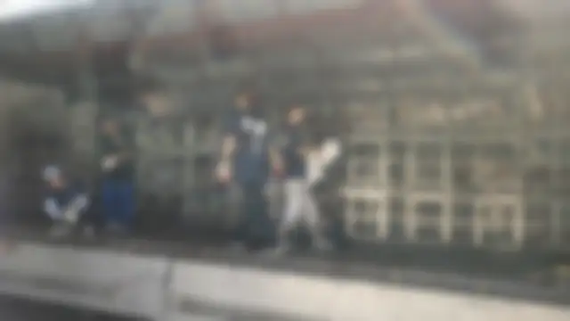
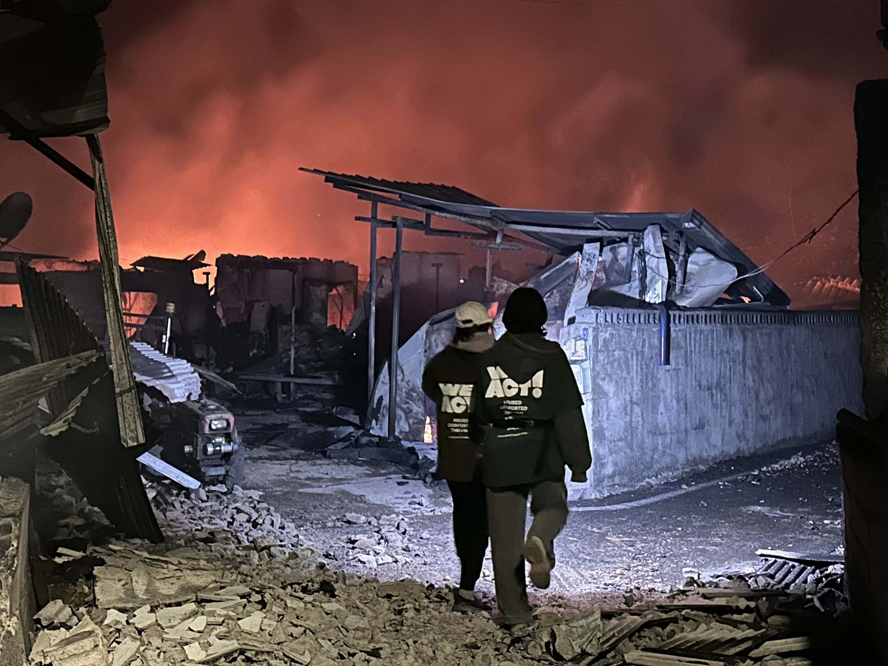
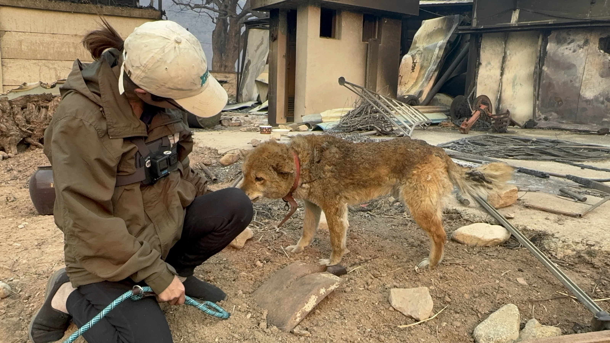
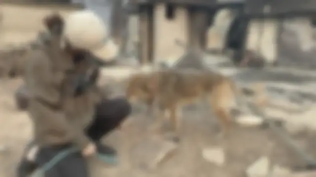
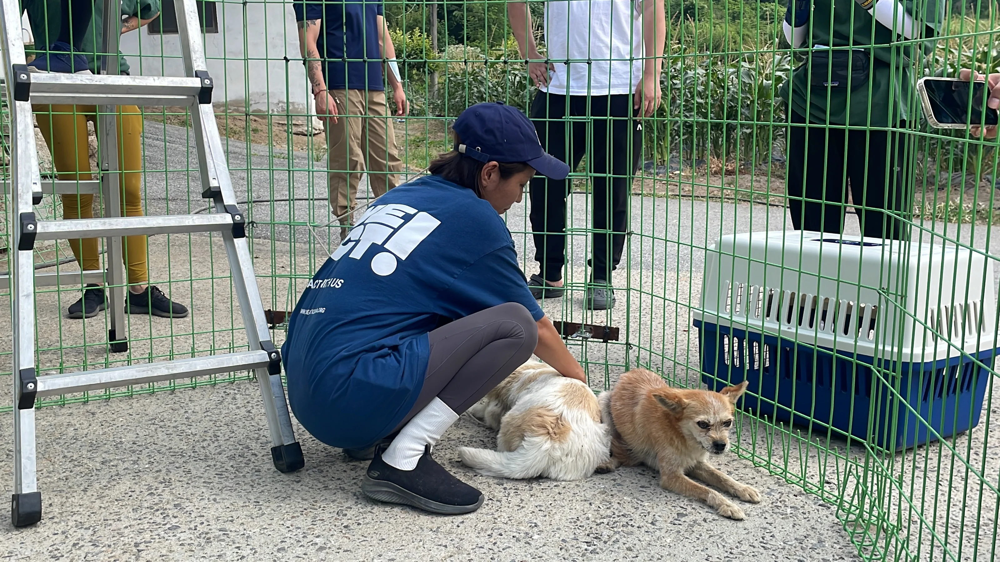
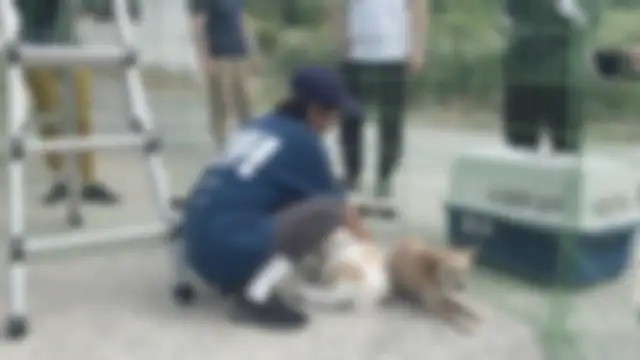
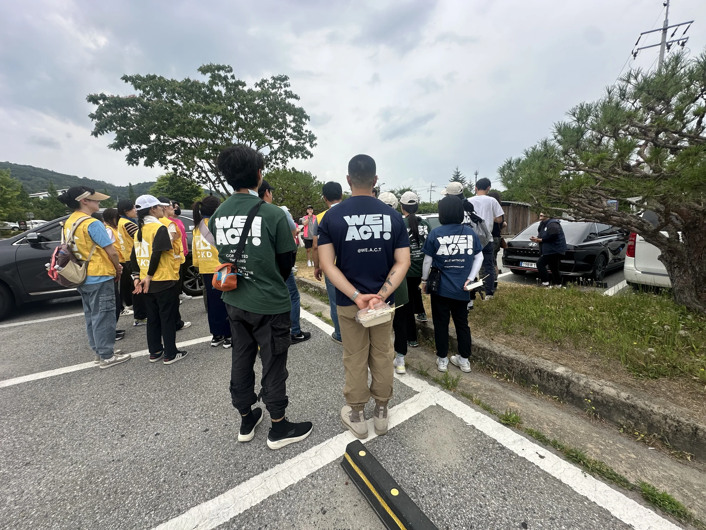

WeAct rescues abused animals and takes action so they can live happy lives.
Help an animal start overFunded only by people like you
Give monthly

Field
01WeAct activists
The people who reach through the bars first.
It began in the summer of 2018 with a few ordinary people. WeAct runs on its activists’ volunteer time and skills.

A · Abused
02Rescue
Where no one else will go,
we go in without hesitation.
Elevated wire cages, dog meat farms, burnt-out villages. Wherever animals are suffering, we go there ourselves and bring them out.
Animals rescued so far1,898
All rescue news

C · Comforted
03Treatment & foster care
Until body and heart have healed.
Rescued animals are treated by our vets, then learn to live with people in foster homes. Help them recover by fostering or volunteering at our shelter.


T · Thriving
04Adoption
The day they meet their forever family.
Our rescued animals find new families in Korea and abroad, and live happy, loved lives.
Animals adopted so far1,670

Home
05Be the WE
in WE ACT!
WeAct rescues and rehomes abused animals with no government funding — only the support of people like you.